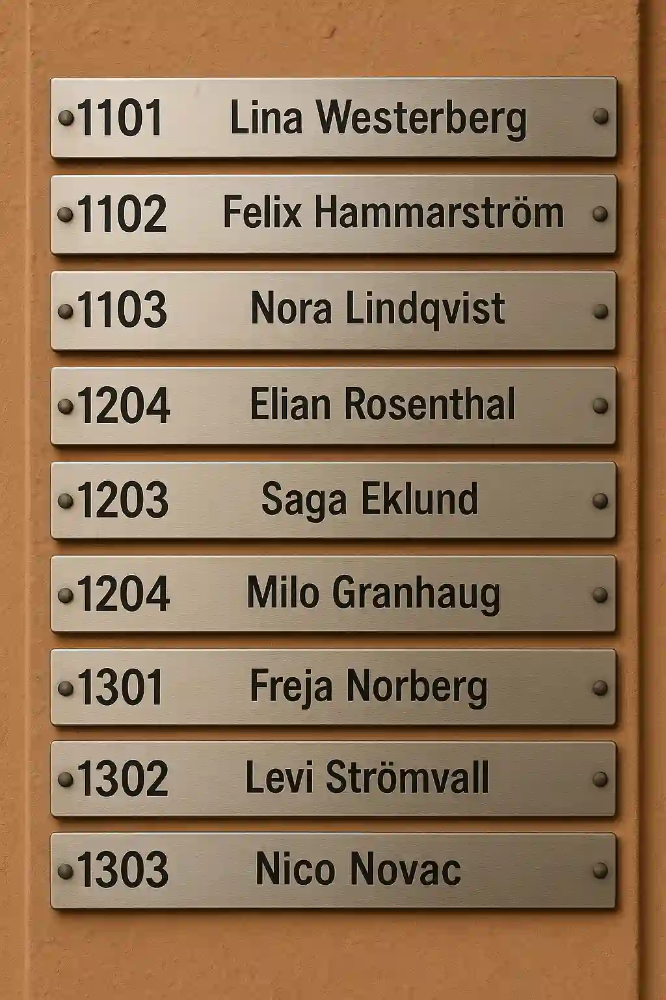
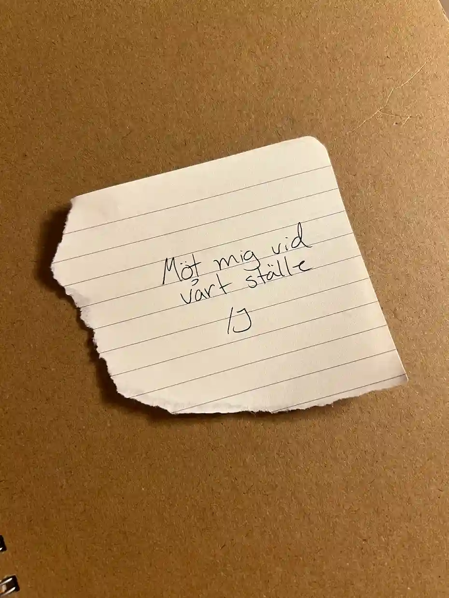

DEL 8
Lägenheten
Ljud här, otillgängligt just nu
Mias steg är stressade genom Varvsparkens grönska. Mot henne springer en man - eller ja, mer joggar. Hon ser inte så noga på honom, hans träningskläder är i en ögonfångande gulgrön färg. Till slut sliter sig hennes stressade blick från hans ljusa shorts.
När hon ser på mannens ansikte känner hon igen honom som Nils, personalchefen på Malmö Live. Nils kollar på henne, stannar in och studerar hennes ansiktsuttryck lite.
”Hej, du bor på Malmö Live va? Är allt okej? Du ser lite stressad ut”, säger han till slut.
Mia tänker - han jobbar med Vera, han kanske vet något.
”Har du sett Vera nyligen?” frågar hon.
”Hmm, ja, jag såg henne idag, men nu var det ett tag sedan. Hon skulle hem tidigare idag men gav ingen anledning.”
Efter att han svarat kollar han lite undrande på Mia och frågar: ”Varför undrar du? Känner ni varandra?”
Mia svarar: ”Jag tror Vera är i fara. Hon är involverad i något farligt med en gäst på ditt hotell. Han heter Jonatan Berg.”
Nils tänker lite och svarar: ”Jag förstår. Jag har varit lite orolig för henne på sistone. Det har verkat som att hon och Jonatan har haft någon typ av relation, men någon ordentlig fara antog jag inte att hon var i.”
Han ser bekymrad ut och kollar sig runt otåligt. ”Hon bor här omkring. Jag kan ge dig hennes adress, så kanske du kan kolla så att allt är okej.”
Senare kommer Mia fram till Veras lägenhetshus - en tråkig och intetsägande byggnad. Medan hon står och kollar på huset kommer en man ut ur porten och håller dörren åt henne. Mia tackar snabbt och smiter in. Hon ser sig runt och hittar en tavla över de som bor där.
Stående vid Veras dörr känner Mia på handtaget - låst. Hon kollar under dörrmattan - ingenting. Hon tänker en stund och drar sin hand längs toppen av dörrkarmen.
Ett högt, metalliskt klang hörs när en nyckel slår i marken.Hon andas en lättad suck, böjer sig ner - nyckeln glider lätt in i låset, och hon är inne.
Hennes handlingar är snabba och bestämda. Mia scannar igenom lägenheten: kläder på en fåtölj, en odiskad skål, en laptop - den är låst. Fotografier på Vera och, vad som kan antas vara, hennes föräldrar.
Till sist - en bit papper. Handstilen känner hon direkt igen. Hon har sett sin chefs snabbt antecknade lappar ofta.

Vilket lägenhetsnummer gick Mia till?